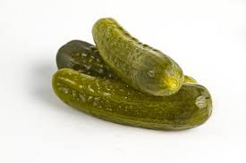

Pickles
Description:Crisp, tangy cucumber pickles made with a simple vinegar brine and fresh dill.
Perfect for burgers, sandwiches, or snacking.
Ingredients
- 4-5 small cucumbers (Kirby or pickling cucumbers work best)
- 1 cup distilled white vinegar
- 1 cup water
- 1 tablespoon kosher salt
- 1 tablespoon sugar
- 2 garlic cloves, smashed
- 1 teaspoon black peppercorns
- 1 teaspoon mustard seeds (optional)
- Fresh dill sprigs
Steps:
- Prep the cucumbers: Wash and cut cucumbers into spears or round slices.
- Make the brine: In a small saucepan, combine vinegar, water, salt, and sugar.
Heat and stir until salt and sugar dissolve. Remove from heat and let it cool slightly.
- Fill the jar: In a clean jar, layer the cucumbers with garlic, peppercorns, mustard seeds, and dill.
- Add the brine: Pour the warm brine over the cucumbers until fully submerged.
- Chill and wait: Seal the jar and refrigerate.
Let them pickle for at least 24 hours before eating—flavor improves after 2-3 days.
Home